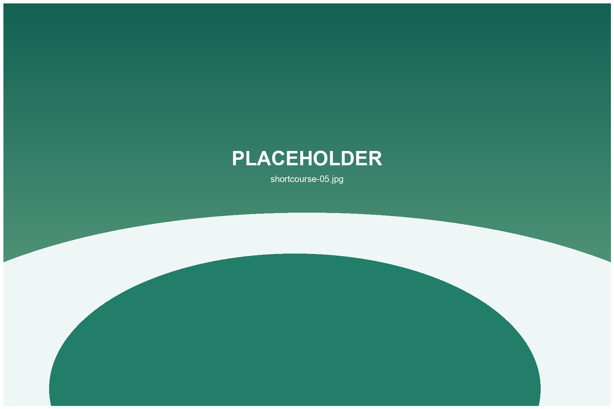

Family Friendly Short Course
A practical option for parents, juniors and mixed travel groups.
Relaxed golf for half-day trips, families, first-time players and visitors who want a lighter Okinawa golf experience.
Short course golf is ideal when your itinerary includes beaches, shopping and sightseeing. It lowers the time commitment while still giving visitors a real golf experience.
A practical option for parents, juniors and mixed travel groups.
Simple routing and lower pressure for first-time golf visitors.

Good for combining golf with lunch, shopping or a northern Okinawa drive.
Yes. It is usually more approachable than a full 18 hole round.
Plan around half a day including arrival, practice and travel time.
Many short-course experiences work well for families, depending on age and course rules.
Rental availability should be confirmed before booking.